2025 – present
VynixAI · Senior Solutions Architect, AI & Cloud Infrastructure
AI-driven, cloud-native, and edge platforms for real-time retail and enterprise workloads: RAG pipelines, scalable inference, and agent automation.
Open to Staff and Principal AI Platform, agent-infrastructure, applied AI architect, and forward-deployed AI roles
I’m Iggy Mwangi, an AI systems architect in Dallas–Fort Worth and Senior Solutions Architect, AI & Cloud Infrastructure, at VynixAI. I make agent platforms dependable by engineering the harness around the model: context, evals, routing, cost, and guardrails. 25+ years shipping software, including Apple, Sam’s Club, AT&T, and Contran.
The harness, not the model. Compound Engineering is my name for that method, and for the public projects below. It is not a company and not a job.
For hiring managers — experience, public proof, and results are next. The tools come after.
Now VynixAI Earlier Nubla AI · Apple · Sam’s Club · Contran · AT&T Since 1998
Current role first. Employer percentages stay under the NDA note. The case studies are public systems you can open.
2025 – present
AI-driven, cloud-native, and edge platforms for real-time retail and enterprise workloads: RAG pipelines, scalable inference, and agent automation.
Jan 2024 – Dec 2024
ML systems and cloud architectures across AWS, Azure, and GCP, focused on LLM integration, retrieval, and dependable ML pipelines.
2022 – 2023
Cloud modernization across AWS and Apple’s internal platforms: replaced lift-and-shift workloads with serverless and container designs, moved pipelines to event-driven architectures, and led FinOps work.
2017 – 2021
Cloud ML for forecasting, computer vision, and real-time analytics, plus retail line-of-business apps on Azure, iOS, and Android at retail scale. FL Global (Jan 2018 – Apr 2019) was a side project alongside this role: media enrichment, streaming, and serverless telemetry.
2011 – 2017
Unified fragmented mobile, web, and backend systems across iOS, Android, AWS, and GCP for long-running operational workflows.
Earlier, 1998 – 2011: AT&T, Verizon, Cingular, EDS, ADP, IBM Innovation Center, BP-Amoco, Williams Communications, and others. B.Sc. Computer Science, University of Minnesota (1996–2001).
Problem. A model that can suggest the next action can also take one the system should refuse.
What I built. The model suggests actions, but a fixed set of rules decides what’s allowed. Anything not on the list is blocked.
Open. Repository
Public supervisor in Python and Rust. Not an employer metric.
Problem. An agent’s code changes can reach the main branch before they are checked against the rules.
What I built. Checks an AI agent’s code changes against your rules before they reach your main branch.
Open. Repository
A JavaScript policy gate. Scope is the public repo.
Problem. A prompt with no checks fails later, in ways a single demo reply will not show.
What I built. Turn a prompt into a test set: real inputs, the checks each answer must pass, and export to JSON Lines, promptfoo, or pytest.
Open. The browser tool
A design sketch of the same check-before-ship path. It runs in the browser.
Baselines and methods aren’t published here. The work falls under confidentiality agreements with my employers. I’m glad to discuss the details under NDA. The two Apple figures are different changes: FinOps on cloud spend, and event-driven pipelines on compute cost.
Compound Engineering is the umbrella for this public work, not an employer. Agent runtime, policy gates, evals, and model-change control come first. Each card opens the live site when there is one.
The model suggests actions, but a fixed set of rules decides what’s allowed. Anything not on the list is blocked.
Checks an AI agent’s code changes against your rules before they reach your main branch.
Records the prompts, models, and settings your code depends on, so changes to them show up in review.
A behavioral diff for model upgrades and deprecations.
Generates an audit-ready AI Bill of Materials from your repo in one command.
Sourced tracker of AI compute by lab, with uncertainty ranges from Epoch AI data.
Independent guide comparing 10 AI agents, with 97 sourced claims and cost, security, and agent-picker tools.
Removes repeated parts of a long chat before it’s sent to the model, so each request costs less.
Research: finds which internal features a code model uses when it writes code.
Small everyday browser utilities. No AI required. Also published at iggym.github.io/utility-belt.
Paste a prompt, or pick an example. You’ll get a score, a list of what’s missing, a version with the filler words removed, and a rewrite with clear sections. It’s a small version of Prompt Matrix Evaluator, and everything happens in your browser.
Tightened
Each tool is a single page you can use right away. Every card says where your text goes, so you can choose the ones that fit your privacy needs.
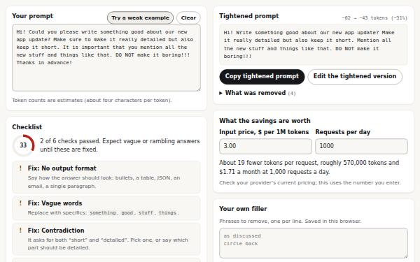
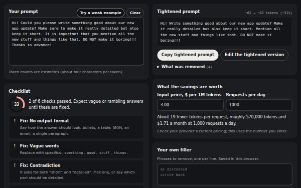
Checks a prompt for a clear task, output format, length limit, audience, vague words, and contradictions, then cuts the filler and shows what that saves per month at your volume. A good first tool to try.
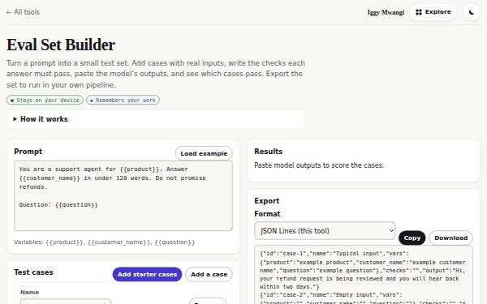
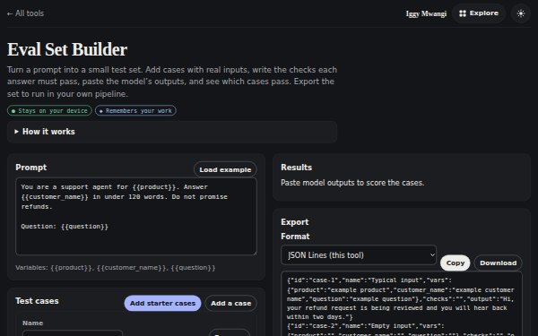
Turn a prompt into a test set. Add cases with real inputs, write the checks each answer must pass, paste the model’s outputs, and export the set to JSON Lines, promptfoo, or pytest.
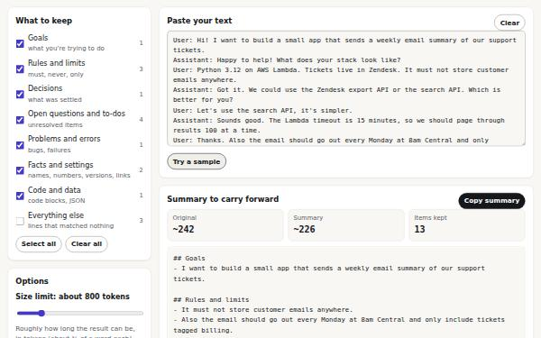
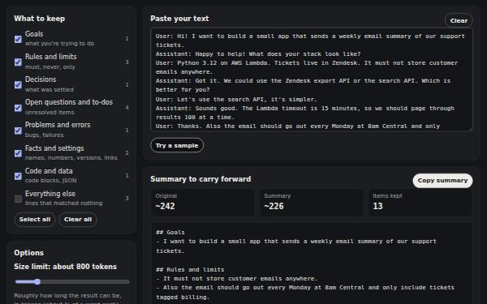
Paste a long chat or notes and get the goals, rules, decisions, open questions, and key facts. Untick or re-sort any item, then copy a ready-made handoff prompt for a fresh chat.
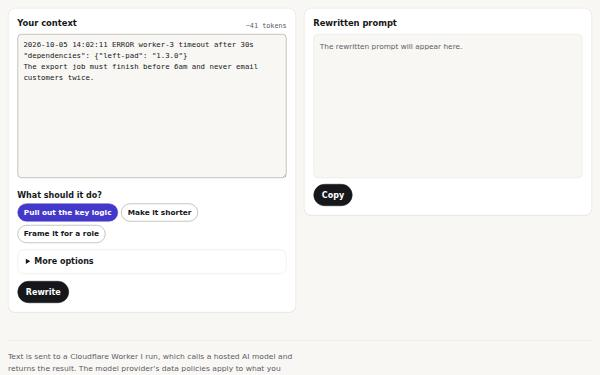
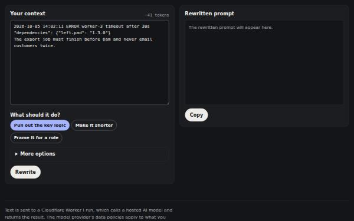
Rewrites messy logs, code, or notes into a tighter prompt using a hosted model. Secrets, emails, and phone numbers are masked before anything is sent, and you can preview exactly what goes out.
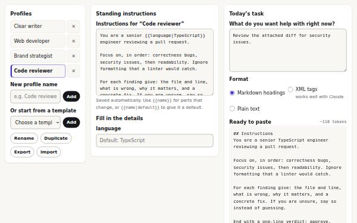
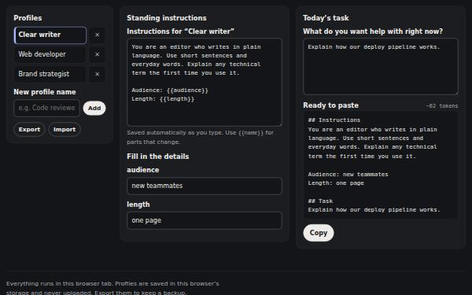
Reusable instruction profiles with fill-in variables and defaults, six starter templates, and Markdown, XML, or plain-text output for any AI chat or system prompt.
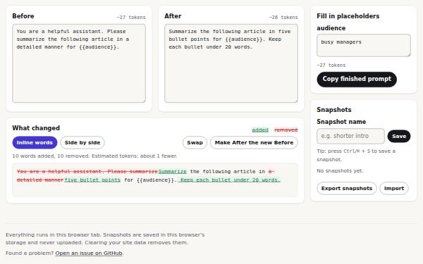
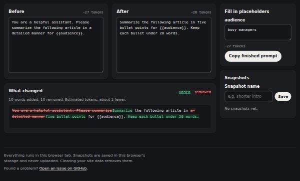
Compare two prompt versions inline or side by side, fill in placeholders, and keep snapshots you can export, import, and roll back to.
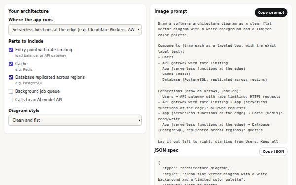
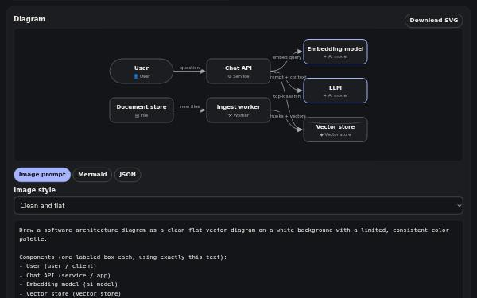
Describe components and connections to get a live architecture diagram. Download it as SVG, paste Mermaid into your docs, or copy a prompt for an image model.
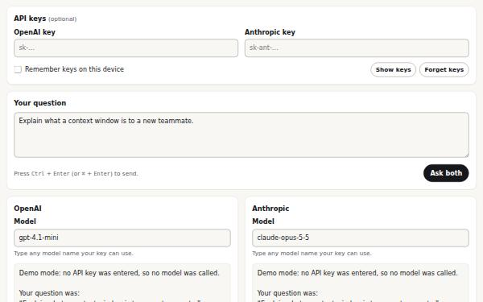
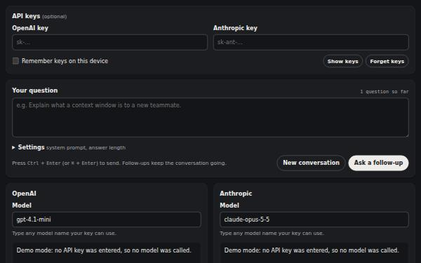
Ask OpenAI and Anthropic models the same question side by side, with follow-ups, a shared system prompt, response times, token counts, and a Markdown export.
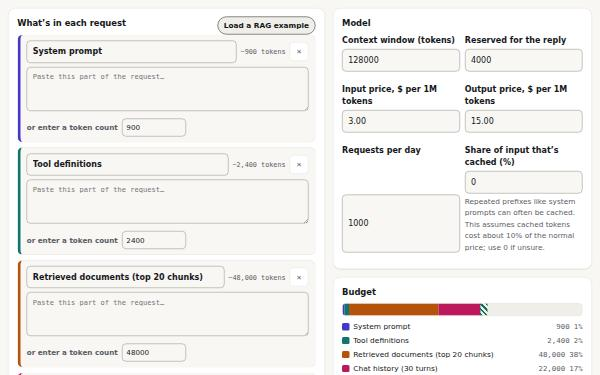
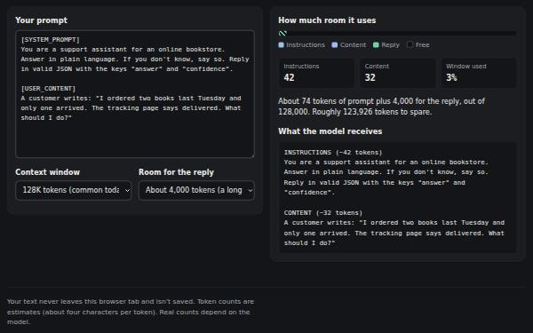
Plan how much text fits in one request. Budget each part of the prompt, check there’s room for the reply, see the monthly cost, and find what to cut first.
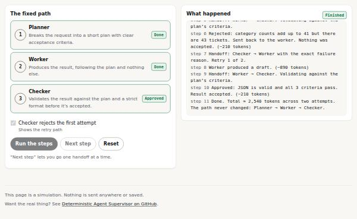
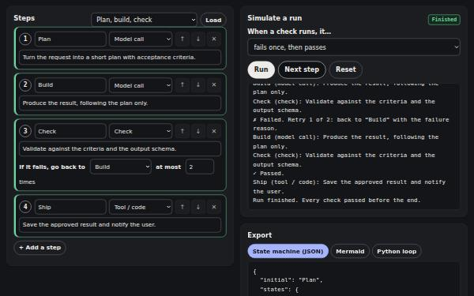
Sketch an AI agent as a fixed list of steps, each with a check and a limit on retries. Simulate failures, then export a spec, a diagram, or starter Python code.
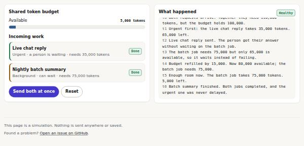
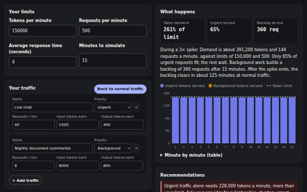
Enter your API rate limits and traffic to see whether you’ll hit them. Also see how urgent requests stay fast when things are busy, and how long a backlog takes to clear.
Field guides for production AI and forward-deployed work. The live site is the thing to open. Source is the repository. Other writing, including work that is not about AI, is on the sites page. Subscribe to new essays (Atom feed).
Other writing, including sites that are not about AI, is listed on the sites page.
Open to Staff and Principal AI Platform, agent-infrastructure, applied AI architect, and forward-deployed AI roles. Consulting is welcome too. A stable summary is at /now.
Harness over model. Most AI failures I’m called in for aren’t model problems; they’re missing context, missing checks, and agents left to improvise. I fix the harness around the model, and each fix becomes a reusable part, so the second system costs a fraction of the first. Compound Engineering is that method. It is not a company and not a job title.
Dallas–Fort Worth. Message me on X or GitHub. LinkedIn works too. There is no email address on this site.
Résumé